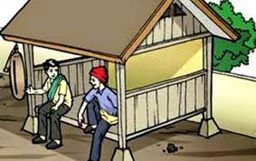

Siskamling: Membangun Keamanan dan Kebersamaan di Lingkungan Masyarakat

Sistem Keamanan Lingkungan (Siskamling) adalah bentuk partisipasi masyarakat dalam menjaga keamanan dan ketertiban di lingkungan tempat tinggalnya. Siskamling menjadi salah satu upaya preventif untuk mencegah tindak kejahatan, seperti pencurian, perampokan, dan gangguan keamanan lainnya. Selain itu, Siskamling juga berperan dalam mempererat hubungan sosial antarwarga, menciptakan lingkungan yang lebih harmonis dan peduli satu sama lain.
Dalam era modern ini, Siskamling tetap relevan dengan mengintegrasikan teknologi dan strategi keamanan yang lebih efektif. Dukungan dari masyarakat dan aparat keamanan sangat penting agar program ini berjalan dengan baik.
Tujuan dan Manfaat Siskamling
Pelaksanaan Siskamling memiliki beberapa tujuan utama, yaitu:
- Meningkatkan keamanan lingkungan dengan patroli rutin dan pemantauan aktif.
- Mencegah tindak kriminalitas dengan kehadiran warga yang siap siaga.
- Membangun kebersamaan dan solidaritas antarwarga dalam menjaga lingkungan.
- Mendukung penanggulangan bencana dengan kesiapsiagaan terhadap kejadian darurat, seperti kebakaran atau bencana alam.
- Menjaga ketertiban sosial dengan mengawasi aktivitas mencurigakan di lingkungan sekitar.
Langkah-Langkah Pelaksanaan Siskamling
Agar Siskamling berjalan efektif, perlu adanya sistem yang terorganisir dengan baik. Berikut adalah langkah-langkah yang dapat dilakukan:
1. Pembentukan Tim Keamanan
- Melibatkan warga setempat secara sukarela.
- Membentuk struktur kepengurusan, seperti koordinator, petugas jaga, dan pencatat laporan.
- Berkoordinasi dengan pihak kepolisian atau aparat keamanan setempat.
2. Jadwal dan Sistem Jaga Malam
- Menentukan jadwal ronda yang bergilir agar tidak membebani satu kelompok tertentu.
- Membagi wilayah patroli sesuai dengan kebutuhan keamanan lingkungan.
- Menggunakan sistem pencatatan untuk mengetahui siapa yang bertugas setiap malam.
3. Peningkatan Sarana dan Teknologi Keamanan
- Memanfaatkan CCTV atau lampu penerangan di titik-titik rawan.
- Menggunakan alat komunikasi, seperti HT atau grup WhatsApp, untuk koordinasi cepat.
- Menyediakan alat pengamanan sederhana, seperti kentongan atau senter, untuk membantu patroli.
4. Sosialisasi dan Kesadaran Masyarakat/p>
- Mengedukasi warga tentang pentingnya partisipasi dalam menjaga keamanan lingkungan.
- Melaporkan kejadian mencurigakan ke pihak berwenang dengan cepat dan tepat.
- Mengadakan pertemuan rutin untuk evaluasi dan perbaikan sistem keamanan.
5. Kerjasama dengan Aparat Keamanan
- Berkoordinasi dengan Bhabinkamtibmas atau Babinsa untuk mendapatkan arahan dan pelatihan.
- Mengundang pihak kepolisian dalam rapat lingkungan untuk meningkatkan efektivitas program Siskamling.
Tantangan dalam Pelaksanaan Siskamling
Beberapa tantangan yang sering dihadapi dalam menjalankan Siskamling antara lain:
- Kurangnya partisipasi warga, terutama di daerah perkotaan yang warganya lebih sibuk.
- Minimnya fasilitas pendukung, seperti alat komunikasi dan penerangan jalan.
- Kurangnya kesadaran akan pentingnya keamanan lingkungan, yang membuat sebagian warga enggan ikut serta.
Untuk mengatasi tantangan ini, dibutuhkan peran aktif dari ketua RT/RW, tokoh masyarakat, dan pemerintah desa dalam mendorong kesadaran serta dukungan terhadap program Siskamling.
Siskamling adalah bentuk nyata dari gotong royong dalam menjaga keamanan dan ketertiban lingkungan. Dengan sistem yang baik dan partisipasi aktif warga, Siskamling dapat menciptakan lingkungan yang aman, nyaman, dan harmonis. Mari bersama-sama menjaga lingkungan kita agar tetap kondusif dan terbebas dari ancaman kriminalitas!
Kembali ke Beranda